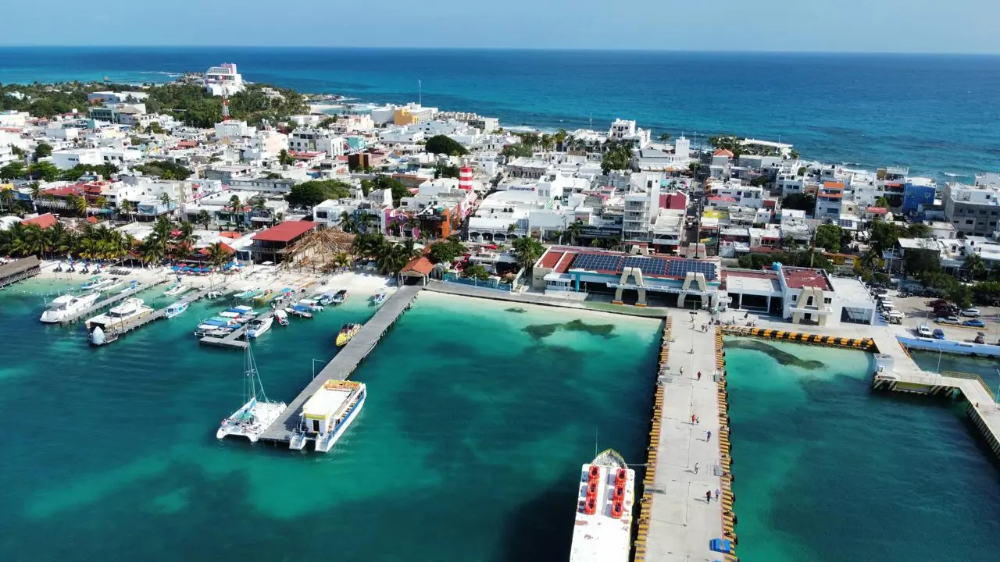

Los lotes se venden cuando el comprador entra por una calle pavimentada y puede conectar agua, drenaje y luz desde el primer día. Construimos la urbanización completa de privadas, fraccionamientos de lotes y desarrollos en condominio: vialidades, guarniciones y banquetas, redes de agua potable y drenaje sanitario, drenaje pluvial, ductos eléctricos y de telecomunicaciones subterráneos, alumbrado público y la caseta de acceso, coordinados con los organismos operadores para que el proyecto pueda entregarse y los lotes escriturarse.

Calles de asfalto, concreto o adoquín con guarniciones, banquetas accesibles, rampas y señalamiento.
Redes de agua, tomas domiciliarias, colectores y cárcamos de bombeo con normas de CAPA o Aguakan.
Bocas de tormenta, colectores y pozos de absorción diseñados para la cuenca de la calle y el karst.
Bancos de ductos, bases de transformador, alumbrado público y ductos para fibra listos para CFE y operadores.
Caseta, control de acceso, barda perimetral, parques y casa club para completar el desarrollo.
Planos as-built, pruebas y expedientes para la municipalización y los convenios de conexión.
En la urbanización se gana o se pierde el calendario de un desarrollo. Trabajamos sobre el plan maestro autorizado y la licencia de urbanización, ordenamos los frentes para que tuberías y ductos se instalen antes que la base y el pavimento y llevamos la documentación que las autoridades pedirán en la entrega-recepción. Agua y drenaje se construyen con las especificaciones del organismo operador, la electrificación con normas de CFE, y cada red se prueba a presión o continuidad antes de taparla.
| Concepto | Incluye | Precio (MXN) |
|---|---|---|
| Urbanización completa | Vialidades, agua, drenaje, pluvial, electrificación, alumbrado | $1,300–$2,600 / m² de vialidad |
| Por lote residencial | Según frente y servicios | $180,000–$450,000 / lote |
| Guarniciones y banquetas | Guarnición colada + banqueta de concreto 10 cm | $380–$650 / ml · $480–$850 / m² |
| Pozo de absorción pluvial | Perforado, ademado, con rejilla y desarenador | $45,000–$120,000 c/u |
Páginas útiles: Construcción de Caminos · Pavimentación Asfáltica · Concreto Hidráulico y Adoquín · Naves industriales y bodegas · Estructuras metálicas
Vialidades, redes y drenaje con normas de los organismos, por etapas según sus ventas. Respuesta en 2 minutos.
Cotizar por WhatsAppRelacionado: Remodelación de Hoteles en Cancún · Restaurantes y Bares en Cancún · Beach Clubs y Spas en Cancún · Remodelación de Casas de Lujo en Cancún · Plantas de Tratamiento en Cancún · Potabilizadoras y Desalinizadoras en Cancún · Tratamiento de Agua para Casas en Cancún · Captación Pluvial y Aguas Grises en Cancún · Estructuras Metálicas en Cancún · Techumbres y Arcotechos en Cancún · Entrepisos y Ampliaciones en Cancún · Casas de Steel Framing en Cancún · Herrería Arquitectónica en Cancún · Protección Anticorrosiva en Cancún · Costa Mujeres · Isla Mujeres · Holbox · Cancún · Puerto Morelos · Playa del Carmen · Cozumel · Puerto Aventuras · Xpu-Há · Akumal · Chan Chemuyil · Tulum · Felipe Carrillo Puerto · Bacalar · Mahahual · Chetumal
Su opinión ayuda a otros propietarios a decidir, y a nosotros a mejorar.
Escribir una reseñaVer reseñas en Google